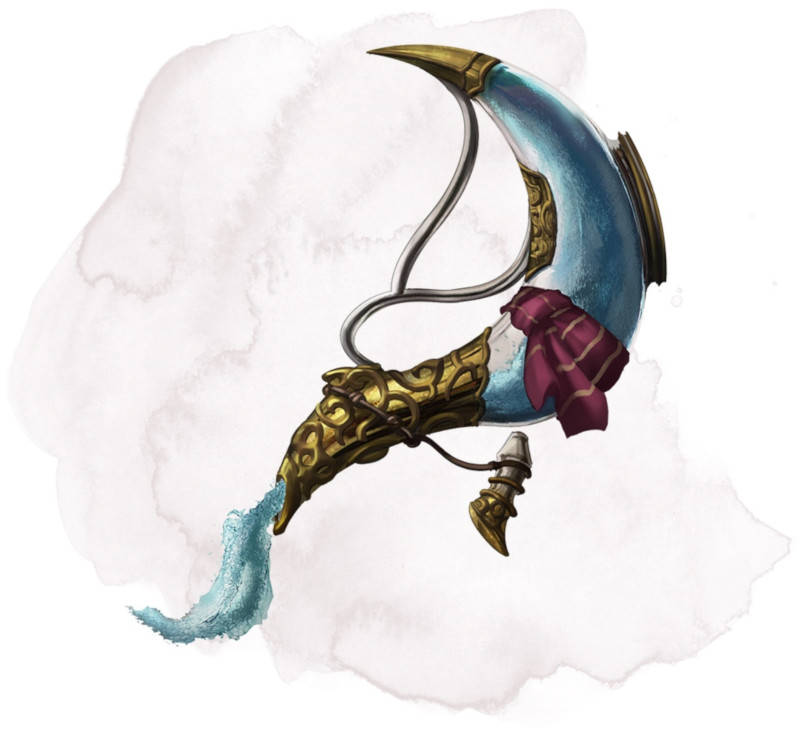

Carafe intarissable
Objet merveilleux, peu commun
Cette flasque bouchée fait de petits clapotis lorsqu'elle est secouée, comme si elle contenait de l'eau. La carafe pèse 1 kg.
Vous pouvez utiliser une action pour enlever le bouchon et prononcer l'un des trois mots de commande, après quoi une certaine quantité d'eau douce ou d'eau salée (selon votre choix) se déverse de la flasque. L'eau cesse de s'écouler au début de votre prochain tour. Choisissez l'une des options suivantes :
• « Ruisseau » produit 4 litres d'eau.
• « Fontaine » produit 20 litres d'eau.
• « Geyser » produit 120 litres d'eau qui apparaissent en un violent jet de 9 mètres de long et 30 centimètres de diamètre. En utilisant une action bonus pendant que vous tenez la carafe, vous pouvez braquer le jet sur une créature que vous pouvez voir et se trouvant à 9 mètres maximum de vous. La cible doit réussir un jet de sauvegarde de Force DD 13 sous peine de subir 1d4 dégâts contondants et être jetée à terre. Au lieu d'une créature, vous pouvez cibler un objet qui n'est ni porté ni transporté et dont le poids ne dépasse pas les 100 kg. L'objet est soit mis à terre, soit repoussé de vous sur 4,50 mètres.
Vous pouvez utiliser une action pour enlever le bouchon et prononcer l'un des trois mots de commande, après quoi une certaine quantité d'eau douce ou d'eau salée (selon votre choix) se déverse de la flasque. L'eau cesse de s'écouler au début de votre prochain tour. Choisissez l'une des options suivantes :
• « Ruisseau » produit 4 litres d'eau.
• « Fontaine » produit 20 litres d'eau.
• « Geyser » produit 120 litres d'eau qui apparaissent en un violent jet de 9 mètres de long et 30 centimètres de diamètre. En utilisant une action bonus pendant que vous tenez la carafe, vous pouvez braquer le jet sur une créature que vous pouvez voir et se trouvant à 9 mètres maximum de vous. La cible doit réussir un jet de sauvegarde de Force DD 13 sous peine de subir 1d4 dégâts contondants et être jetée à terre. Au lieu d'une créature, vous pouvez cibler un objet qui n'est ni porté ni transporté et dont le poids ne dépasse pas les 100 kg. L'objet est soit mis à terre, soit repoussé de vous sur 4,50 mètres.
Dungeon Master´s Guide (SRD)
